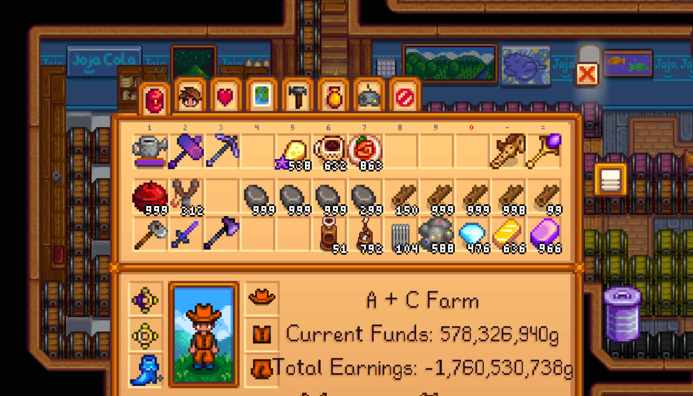

Implementing a Slot-based Inventory System
In this tutorial, we will go over how to implement a slot-based inventory system in Godot. This type of inventory system is commonly used in games where players can collect and manage items, such as Stardew Valley.

Image: Inventory from Stardew Valley
We want to start by planning out the structure and its requirements. For the purpose of the tutorial, we will be replicating the Stardew Valley inventory system. The inventory contains a defined number of slots that can each hold a maximum quantity of said item.
Functions we want to include are shown below.
- Limit number of slots in inventory
- Limit number of items per slot
- Add items to inventory
- Remove items from inventory
Step 1: Item Resource
First, we will create a new resource type for our items. In Godot, resources are data containers that can be easily saved and loaded. Resources are great for storing data that needs to be shared across multiple instances as they are reference-counted and can be reused without duplicating data.
We will create a new script called "item.gd" that extends the Resource class.
Loading item script....The above code defines a simple item resource with three properties: name, icon, and description.
We can extend off of this base class to create more specific item types with additional properties or behaviors.
Step 2: SlotData Resource
Next, we will create a resource to represent each slot in the inventory. Each slot in an inventory contains some number of a single type of item.
Loading slot data script...Step 3: Inventory Resource
Next, we will create an inventory resource to manage the items. This resource will hold a list of items and provide methods for adding, removing, and accessing items.
Basic Structure
Let's start with the basic structure. The resource contains an array of SlotData resources. These SlotData resources are the individual items and associated quantities. Each slot can hold a maximum of 99 items, and the inventory can hold a maximum of 20 slots.
Loading inventory-1 script...Adding Items
Next, let's create a simple method to add an item to the inventory. The method will take an Item resource and a quantity as parameters (default 1). It will return true if the item was successfully added, or false if the inventory is full or the item could not be added.
Loading inventory-2 script...The function loops through all of the slots in the inventory, checks to see if the slot contains the same item as what is trying to be added, and then adds the quantity to that slot's quantity. Can you see any issue with this implementation? What if the item is not in the inventory? What if there are no empty slots? What if the item is in the inventory, but the quantity we are trying to add exceeds the available space? Let's try to handle these cases.
Slot Capacity Reached
What happens if we go to add an item to a slot but the slot is already full? We need to add a check for that. Let's make sure the slot has space available and then add as much as we can to that slot.
Loading inventory-3 script...Item Not in Inventory
If the item is not already in the inventory, we need to create a new slot for that item and add it to the inventory. we need to see if there is space for another slot and then create the new SlotData resource.
Loading inventory-3 script...But what about the maximum number of inventory slots? Let's add a check to ensure we have enough space to add a whole new slot.
Loading inventory-4 script...Exceeding Available Space
What if we are trying to add more quantity of an item than is available in any single slot? Or maybe the quantity we are trying to add exceeds the available space of an existing slot? We need to flow over into another slot. Let's start by counting up the total available space before making any changes to the inventory. If the total available space is less than the quantity we are trying to add, we will return false.
Now that we know there is enough space, we can loop through the slots again and add the quantity to the existing slots until we have added all of the quantity.
We can break the available space calculation into a separate function for better readability and early termination.
Remove Item
Sort Items
Full Inventory Script
Loading inventory script....